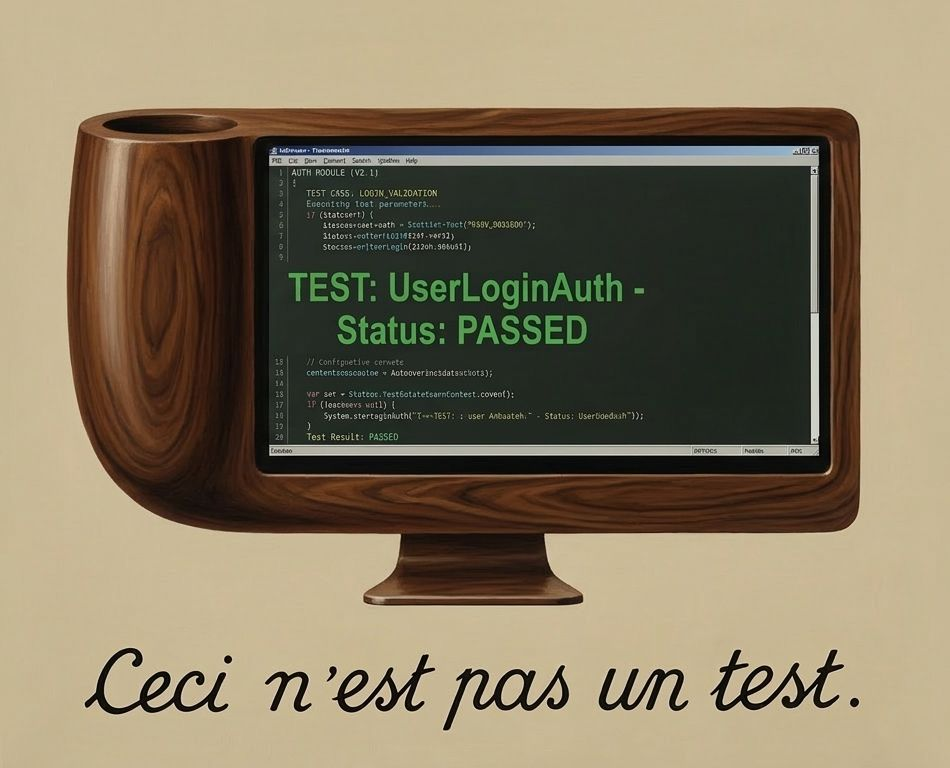
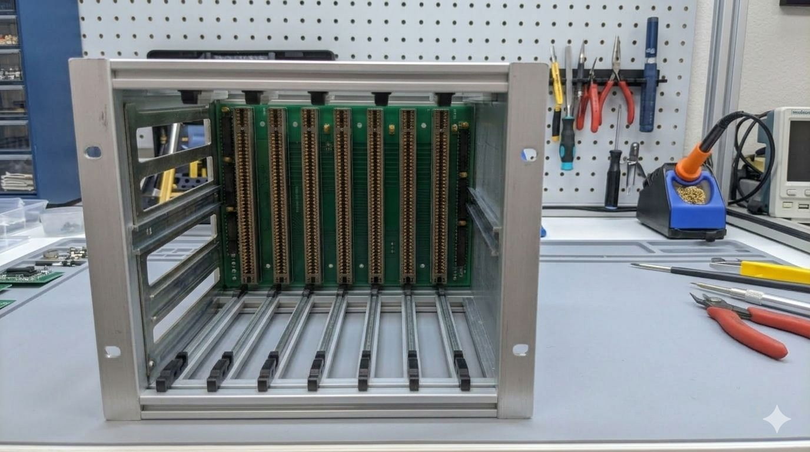

David Boreham, March 17, 2026
Perhaps this isn't widely recognized yet but I believe that in order to use AI tools such as Claude Code you must be running "representative tests". To explain what I mean by that and why, let's begin with some history:
My education in testing began on the first day of job number one. The boss took me on a tour of the factory. There was an area where newly made memory circuit boards were being tested. Every board off the production line was plugged into a test rig. It had a computer able to address the memory on the board, and ran a memory test program. I was shown how to start a test. After a while it printed "PASS". Then he asked me to un-plug the board from the test rig, and re-run the test. As we watched the screen report "PASS" again he chuckled. The test passed with no circuit board plugged into the rig! Apparently this was because it wrote a data pattern then immediately read back to verify. With no board in the rig capacitance on the wires kept the written data around long enough that it was still there to allow the test to pass. It couldn't distinguish between working memory and thin air.
I'd learned that just having testing isn't enough: the tests used need to be carefully crafted to ensure the product actually works.

(Image courtesy of Nano Banana 2)At the next few places I worked we had a pretty simple approach to software testing which was: try running the code as you write it, then give the (supposedly) finished product to some other people and ask them to try using it and report anything that didn't work. That approach, perhaps surprisingly, delivered reasonable results but it was time consuming and costly and not exactly consistent.
The subsequent years saw a scaling up of the software industry to serve the internet. Better funded projects allowed more professional processes: revision control and automated build systems were adopted. We evolved automated testing techniques pretty much from a blank page. At the time it seemed reasonable to take an approach that considered the nature of the product being "shipped", and aimed to mimic as closely as practical the actions of whoever or whatever would be using the product. Like that but automated.
For example if the product was a library then the tests would consist of a test application that linked the library and made calls to its API, attempting to exercise it in every way possible. If the product was a server then we'd test it by writing special test clients. Tests would consist of spinning up a test server and having the test clients exercise its functionality. These approaches can be seen in the tests for BerkeleyDB (a C library) and Netscape's LDAP Server (a network protocol server and database). In retrospect I'd call this "representative testing". Tests that are representative of the way in which the product will be used. The goal was to have absolute assurance of product quality, only from automated tests. We had tests for performance, for tolerance of network latency, and for resilience to power failures, aiming to cover all angles.
The next career "era" was spent consulting at Silicon Valley startups. In contrast to the earlier stint where we had invented our own approach to testing based on the nature of the product, everybody now seemed to know how to do testing. Curiously it was always done the same way: plenty of quite simple test cases and they always got run after every code change, so they had to be quick. It took a while for the penny to drop but eventually it became apparent that this universal testing philosophy was being driven by the then new "test frameworks" that emerged for each programming language.
If you were programming in for example Java, then you'd use JUnit. This opened a path of least resistance when adding tests to a project: either use the test framework du jour and test its way, or embark on a path likely to incur extra work to take some different approach. As a result almost all testing was done with the framework. The problem I noticed however was that test frameworks deal only with "Unit Tests" which are the kind we had previously used to test library code. This works by spinning up a test process (the framework takes care of most of the work which is nice) that can call into code to be tested, inside that process. Obviously this makes perfect sense if you're shipping a library, however in most of the situations I encountered the product was some sort of CLI tool or server. Unit tests really aren't representative of how such products will be used.
I even observed the problematic scenario where a server was deployed into production without ever having had a single client connect to it! And of course eventually someone made a change that meant it in fact did not accept client connections. That was a fun day.
What seemed to be happening in these companies was that unit testing was at least testing something, but the overall assurance of product functionality was being achieved by more informal methods. There was tacit testing: developers manually testing their own code as they wrote it, just like in the olden times. The combination of a large number of unit tests, and the tacit testing, ended up being sufficient most of the time.

Returning to the present day: we're using AI coding agents like Claude Code to write much of our new code. How does this affect our approach to testing? Luckily I was able to see how this played out in practice, working on one of my deployment testing tools:
I wanted to use Claude to add new features to a Python CLI utility called machine. It's used to automate the creation and configuration of test VMs. Handy for when you need to test system deployment tools. Like Terraform but easy to use. Machine had been tested the old school way: when new code was written I ran it myself then observed whether it worked or not. Automated testing wasn't worthwhile because it was a side project with a user base of approximately one.
But after asking Claude to add new features there was a new problem: I would have to test whatever code changes Claude had made myself (actually that's not quite true: Claude can run its own manual tests if given the necessary provider credentials). And after any future AI-generated code changes I would need to figure out what manual testing was needed. That extra work largely negates the benefits of AI coding. Clearly it wouldn't make sense to use AI code generation on this project without also adding automated tests.
Claude's first feature implemented environment variable expansion in configuration files (handy to avoid exposed credentials). After the PR was merged the prompt below asked Claude to add testing to the project, and in particular to test that new feature:

Claude crunches and grinds and (this would have been astonishing a year ago) adds testing to the project:

The testing PR looks reasonable enough.
It adds the pytest framework to the project and includes a number of
test cases for the feature I mentioned. But pytest is a unit test framework that makes it easy to write
unit tests. That led Claude into the same trap as many developers: it made tests that are not actually representative.
The problem is that the feature (expand environment variables) inherently
can't be unit tested. This is because in order to test that a CLI tool properly expands environment variables,
you need to run that tool with some test environment variables set, and check that the tool's behavior
is consistent. Simply calling into the code that processes environment variables doesn't do that.
Apart from anything else the test data was never ever in an environment variable! The test only changes the
state of os.environ inside the test process:

Now at this point I would typically engage in an argument with someone who claims that the unit test above is just fine,
that the chance of os.environ not matching the actual environment is very low.
Luckily Claude does not like to argue! But perhaps worthwhile mentioning that we need to have the representative test
for this feature precisely because the feature was AI-coded. If a human had written that code it's 100% certain that
the human would have manually tested it in a representative way. We can know that because that manual test is
actually easier for a human to run vs writing the "equivalent" unit test. The result would be a unit test
that's probably ok, plus a manual test that ensured the unit test is definitely ok. When AI writes the same
code the manual test check never happened.
So as the responsible human I asked Claude to consider what to do about it:

What's fascinating about this is that Claude "understands" the concept of a representative test, when prompted, and also knows perfectly well how to write such a test. But it didn't until I asked. The new tests run in the pytest framework, but execute an instance of the CLI tool itself, like this:

Over the following days Claude continued adding test coverage, including what we call "end to end" automated tests that verify the tool can create and configuring actual VMs on a provider platform. With those tests in place Claude went on to add support for a second hosting provider. This lightning-paced development wouldn't have been possible without the right approach to testing because at some point code would have been generated that didn't work but passed all unit tests.

